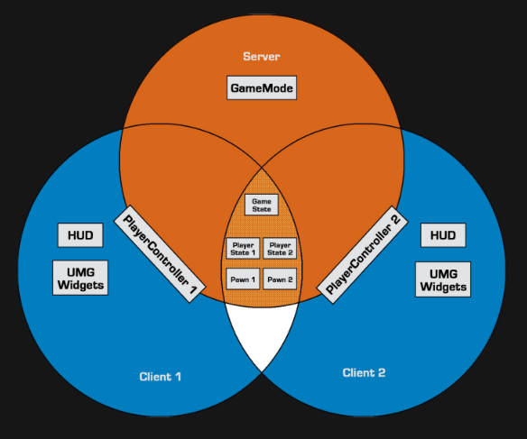
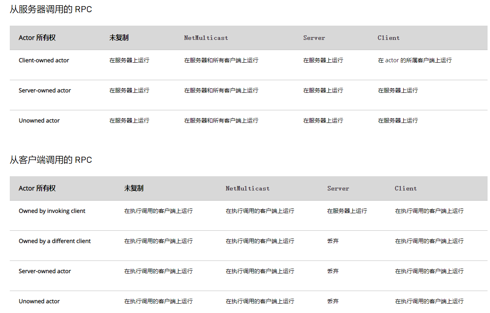

网络概要#
Server-Client架构#
| ServerOnly | Server&Clients | Server&OwningClient | OwningClientOnly |
|---|---|---|---|
| AGameMode | AGameState & APlayerState & APawn | APlayerController | AHUD & UMG |

Replication#
Replicated、ReplicatedUsing=FUNCTIONAME
属性随网络进行复制
ReplicatedUsing 说明符指定一个回调函数(必须为UFUNCTION)，其在属性通过网络更新时执行
GetLifetimeReplicatedProps
需重写函数 GetLifetimeReplicatedProps
并使用DOREPLIFETIME、DOREPLIFETIME_CONDITION等 注册需要同步的属性
void ARORCharacter::GetLifetimeReplicatedProps(TArray< FLifetimeProperty >& OutLifetimeProps) const
{
Super::GetLifetimeReplicatedProps(OutLifetimeProps);
DOREPLIFETIME(ARORCharacter, IsInCombat);
DOREPLIFETIME_CONDITION(ARORCharacter, RowName, COND_InitialOnly);
DOREPLIFETIME_CONDITION_NOTIFY(ARORCharacter, OnDieInfo, COND_None, REPNOTIFY_Always);
}
enum ELifetimeCondition
{
COND_None = 0 UMETA(DisplayName = "None"), // This property has no condition, and will send anytime it changes
COND_InitialOnly = 1 UMETA(DisplayName = "Initial Only"), // This property will only attempt to send on the initial bunch
COND_OwnerOnly = 2 UMETA(DisplayName = "Owner Only"), // This property will only send to the actor's owner
COND_SkipOwner = 3 UMETA(DisplayName = "Skip Owner"), // This property send to every connection EXCEPT the owner
COND_SimulatedOnly = 4 UMETA(DisplayName = "Simulated Only"), // This property will only send to simulated actors
COND_AutonomousOnly = 5 UMETA(DisplayName = "Autonomous Only"), // This property will only send to autonomous actors
COND_SimulatedOrPhysics = 6 UMETA(DisplayName = "Simulated Or Physics"), // This property will send to simulated OR bRepPhysics actors
COND_InitialOrOwner = 7 UMETA(DisplayName = "Initial Or Owner"), // This property will send on the initial packet, or to the actors owner
COND_Custom = 8 UMETA(DisplayName = "Custom"), // This property has no particular condition, but wants the ability to toggle on/off via SetCustomIsActiveOverride
COND_ReplayOrOwner = 9 UMETA(DisplayName = "Replay Or Owner"), // This property will only send to the replay connection, or to the actors owner
COND_ReplayOnly = 10 UMETA(DisplayName = "Replay Only"), // This property will only send to the replay connection
COND_SimulatedOnlyNoReplay = 11 UMETA(DisplayName = "Simulated Only No Replay"), // This property will send to actors only, but not to replay connections
COND_SimulatedOrPhysicsNoReplay = 12 UMETA(DisplayName = "Simulated Or Physics No Replay"), // This property will send to simulated Or bRepPhysics actors, but not to replay connections
COND_SkipReplay = 13 UMETA(DisplayName = "Skip Replay"), // This property will not send to the replay connection
COND_Never = 15 UMETA(Hidden), // This property will never be replicated
COND_Max = 16 UMETA(Hidden)
};
RPC#
Server、Client、NetMulticast
声明 RPC 函数时，会声明一个名为 函数名_Implementation 的附加函数，而这个附加函数才是我们需要实现的 远程函数
Reliable、Unreliable
由于带宽或网络错误会导致 RPC 失败，当声明为 Reliable 时，会确保 RPC 成功
非必要不要使用 Reliable
WithValidation
声明 RPC 函数时，会声明一个名为 函数名_Validate 的附加函数，此函数使用相同的参数，但是会返回bool值，只有返回 true 时才会成功调用 RPC

Actor的所有权#
Actor的所有权
每个Connection都有一个PlayerController，要确定某个Actor的所有权是否为该连接，查看其最外围的Owner是否为该连接持有的PlayerController即可
以下情形需要确定所有权
RPC需要确定哪个客户端将执行Run-On-Client RPCActor复制与连接相关性bOnlyRelevantToOwner=true的Actor，只有同步到拥有此Actor的连接
- 在涉及所有者时的
Actor属性复制条件DOREPLIFETIME_CONDITION中的COND_OwnerOnly等
Actor相关性#
某一时刻客户端（即该客户端拥有的连接）不一定需要看到服务器上所有的Actor， 虚幻引擎的网络代码中包含一处重要的带宽优化：服务器只会让客户端知道与其相关的 Actor。虚幻引擎（依次）参照以下规则确定Actor与客户端的相关性
AActor::IsNetRelevantFor() 相关性判断
- 如果
Actor是bAlwaysRelevant、归属于Pawn或PlayerController、本身为Pawn或者Pawn是某些行为（如噪音或伤害）的发起者，则其具有相关性。 - 如果
Actor是bNetUseOwnerRelevancy且拥有一个所有者，则使用所有者的相关性。 - 如果
Actor是bOnlyRelevantToOwner且没有通过第一轮检查，则不具有相关性。 - 如果
Actor被附加到另一个Actor的骨架模型，它的相关性将取决于其所在基础的相关性。 - 如果
Actor是不可见的(bHidden == true)并且它的Root Component并没有碰撞，那么则不具有相关性，- 如果没有
Root Component，AActor::IsNetRelevantFor()会记录一条警告，提示是否要将它设置为bAlwaysRelevant=true。
- 如果没有
- 如果
AGameNetworkManager被设置为使用基于距离的相关性，则只要Actor低于净剔除距离，即被视为具有相关性。
Pawn 和 PlayerController的相关性判断
Pawn 和 PlayerController 将覆盖 AActor::IsNetRelevantFor() 并最终具有不同的相关性条件
优先级设定#
Actor 的 NetPriority
Actor有一个变量 float NetPriority。该变量的数值越大，该Actor的相对带宽就越多。
和NetPriority=1.0 的Actor相比，NetPriority=2.0 的Actor可以得到两倍的更新频度。
唯一影响优先顺序的就是它们的比值，无法通过提高所有优先级的数值来增加虚幻引擎的网络性能。
virtual void AActor::GetNetPriority() override;
计算Actor的当前优先级时使用了虚函数 AActor::GetNetPriority()。为避免出现饥荒（starvation），AActor::GetNetPriority() 使用Actor上次复制后经过的时间乘以NetPriority。该函数还考虑了Actor 与观察者的相对位置以及两者之间的距离。